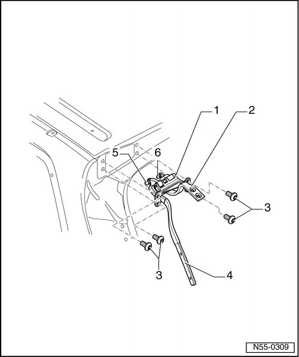

Rear Lid Hinge
Rear Lid
Rear Lid Hinge
• Removal and installation is described for left rear lid hinge. Removing and installing the right hinge is identical.
Removing

- Remove headliner.
- Remove hinged window, refer to --> [ Rear Lid Hinged Window ] Rear Lid Hinged Window
- Rear lid, removing, refer to --> [ Rear Lid ] Rear Lid
- Gas-filled strut cover, through 10.2006, removing, refer to --> [ Gas-filled Strut Cover, through 10.2006 ] Gas-Filled Strut Cover, Through 10.2006
- Remove the gas-filled strut cover, from 11.2006. Refer to --> [ Gas-filled Strut Cover, from 11.2006 ] Gas-Filled Strut Cover, From 11.2006
- Remove gas-filled strut of hinged window, refer to --> [ Gas-filled Strut for Hinged Window ] Gas-Filled Strut For Hinged Window
- Remove the gas-filled strut on the rear lid. Refer to --> [ Gas-filled Strut, Rear Lid ] Gas-Filled Strut, Rear Lid
- Remove screws - 3 - and remove rear lid hinge - 1 -.
Installation
To install, perform the steps used for removal in reverse order.
- Adjust the rear lid. Refer to --> [ Rear Lid, Adjusting ] Rear Lid